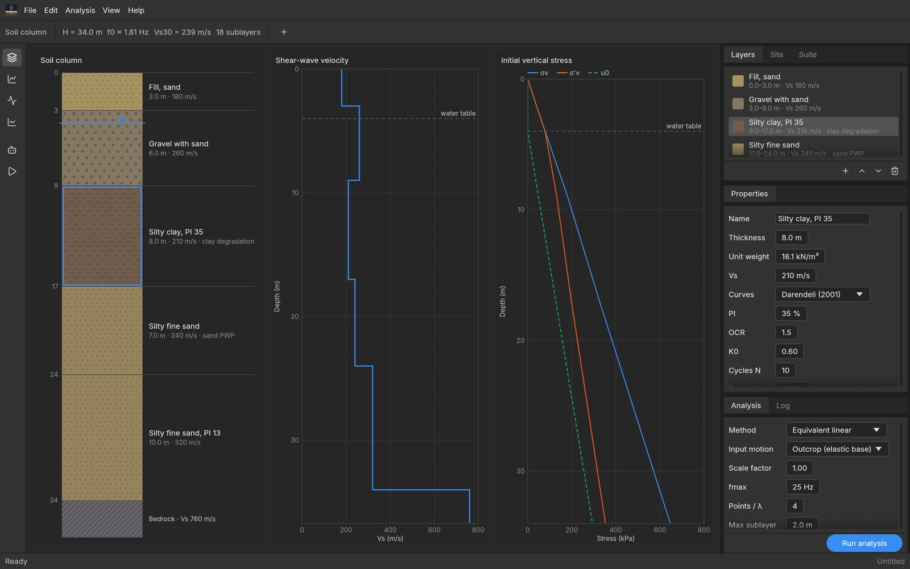
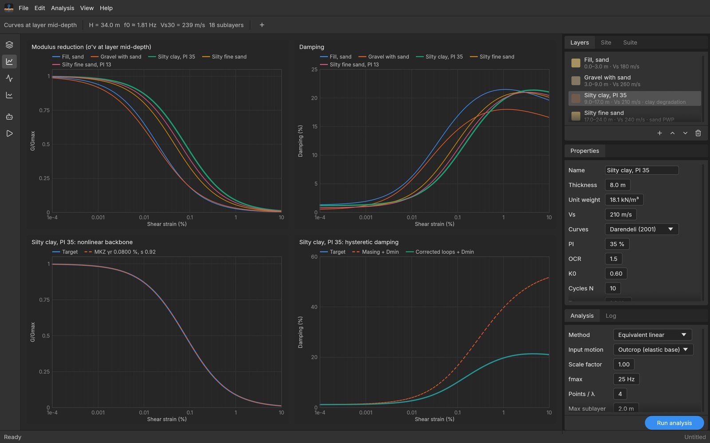
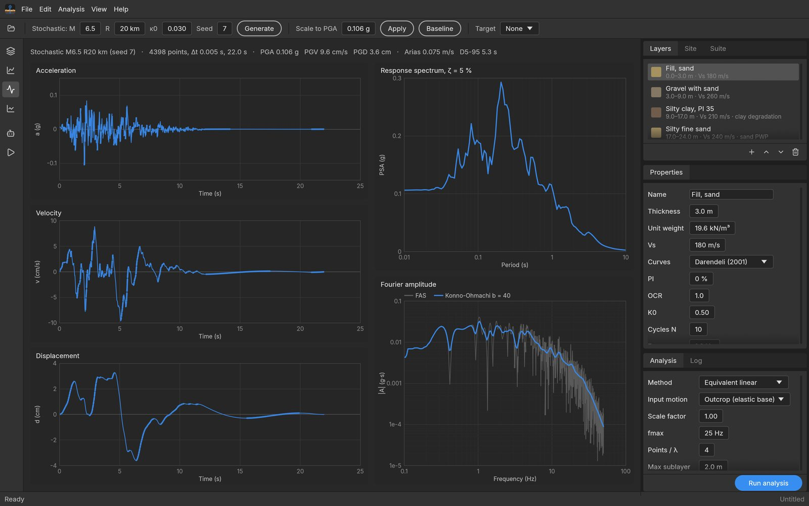
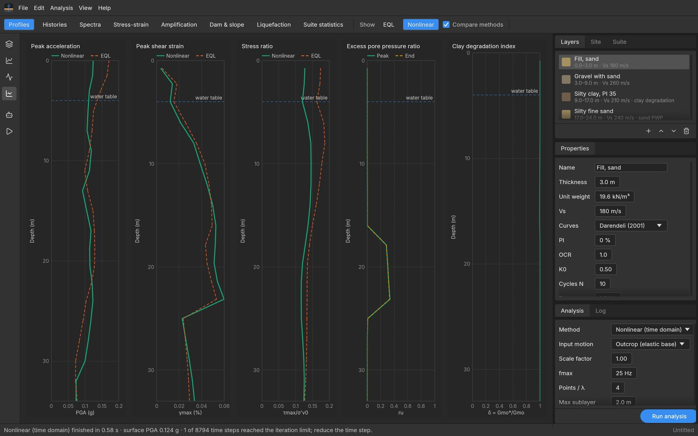
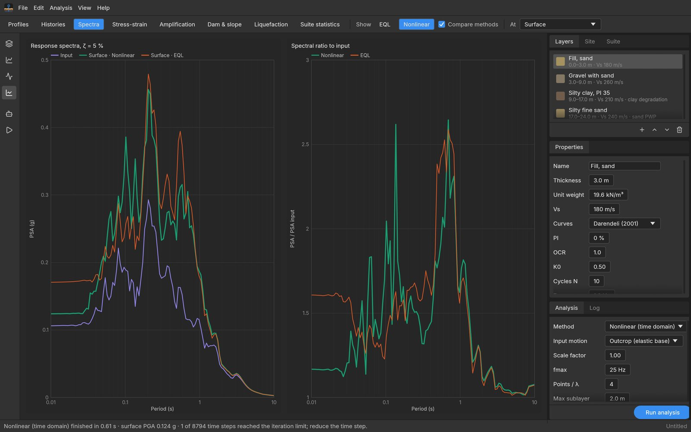
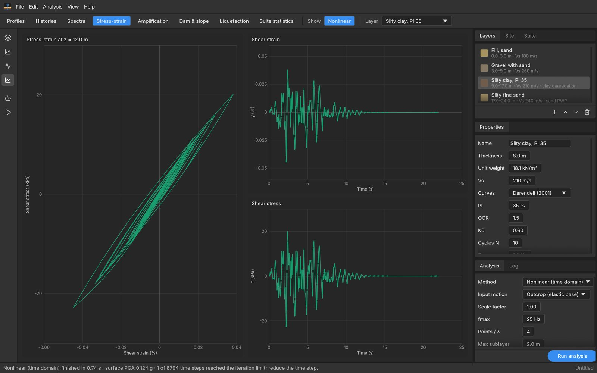
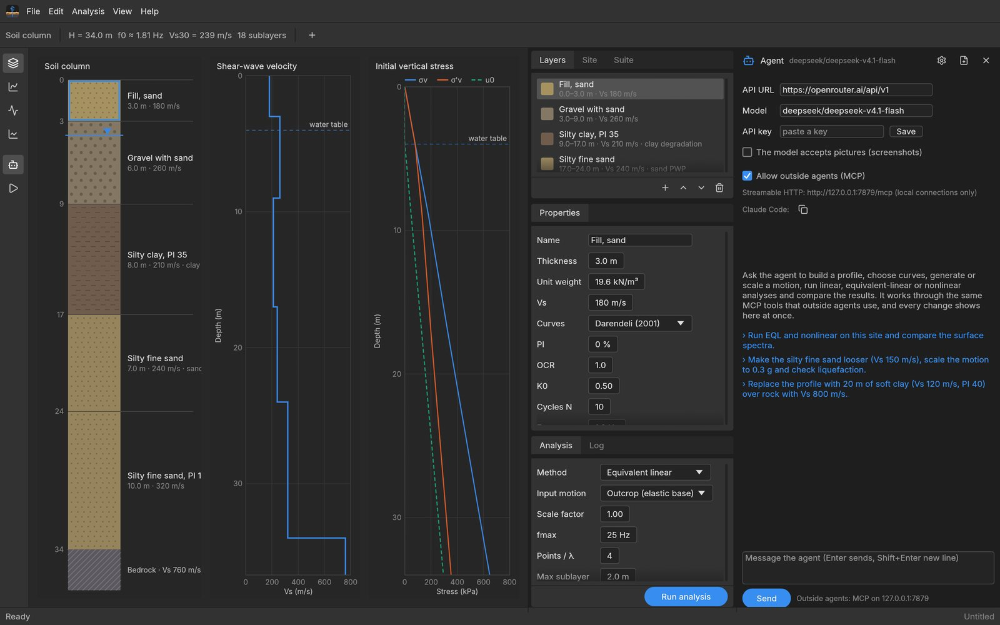

User manual · v0.1.0
Motus user manual
This manual walks through Motus from installation to a finished set of results. It describes every page and panel of the window in the order an engineer uses them, explains what each setting does to the analysis, and ends with the agent, the command line and the checks to make before the numbers are used for design.
1Install and first launch
Motus is a single program with no installer, licence key or account, so you download the zip for your system from the download section, unpack it and start the program. The macOS build is universal (Apple silicon and Intel, macOS 11 or later) and the Windows build runs on 64-bit Windows 10 or later, whereas Linux users currently build from source with Rust 1.80 or newer.
macOS
Unzip and move Motus.app to Applications. The app is signed ad hoc but not notarised, so on first launch right-click it and choose Open, then confirm. Later launches open normally.
Windows
Unzip the folder anywhere and run motus.exe. The executable is not code-signed, so SmartScreen may warn on first launch: choose More info, then Run anyway.
Each package also contains motus-cli, a version without the window for batch work (Section 12), which on macOS sits inside the bundle at Motus.app/Contents/MacOS/motus-cli, and two example projects, example.motus and bangkok_2pct50yr.motus. When Motus starts without a file it opens the built-in example site, which follows the layer sequence of the D-MOD2000 tutorial column (sand fill, gravel with sand, a PI 35 silty clay and two silty fine sands over rock) with assumed shear-wave velocities and a synthetic M 6.5 record at 20 km. The example is the quickest way to learn the program, because every page already has data on it.
cargo build --release
./target/release/motus # the window, with the example site
./target/release/motus site.motus # open a project2The window
The window follows a Photoshop-style layout, so the work area sits in the middle while the controls that edit the project live in a dock on the right. Four pages share the work area, namely Profile, Curves, Motion and Results, and you move between them with the tool strip on the left or the View menu. The dock stays the same on every page, so you can change a layer while looking at its curves or at the results it produced.

1 2 3 4 5 6 7 8- 1Menu bar: File, Edit, Analysis, View and Help.
- 2Options bar: controls for the current page (column summary, motion tools, result views).
- 3Tool strip: Profile, Curves, Motion and Results pages, the agent, and Run.
- 4Work area: the plots of the current page. Click a layer in the column to select it.
- 5Layers / Site / Suite card: the layer list, the water table and bedrock, the suite of motions.
- 6Properties card: every property of the selected layer.
- 7Analysis / Log card: method and solver settings, the Run analysis button, and the solver log.
- 8Status bar: progress, the last message, and the file name (a dot marks unsaved changes).
On the Profile and Curves pages the options bar summarises the column with its total depth H, the fundamental frequency estimate f0, Vs30 and the number of sublayers the solvers will use, so you see at once how an edit changes the site. The View menu also switches between the Pro Dark and Pro Medium themes and opens the agent panel.
3Your first analysis
The following steps take the example site through an equivalent-linear and a nonlinear run and compare them, which shows the whole workflow in about two minutes. Each step points to the section that explains it in detail.
- Start Motus, or choose File ▸ New (example site). The Profile page shows five layers over bedrock with Vs 760 m/s and a water table near 4 m.
- Click the Silty fine sand layer and look at the Properties card, where its Vs, curve model and sand pore-pressure parameters are set (Section 4).
- Open the Motion page and type
0.3into Scale to PGA, then press Apply to scale the synthetic record to 0.3 g (Section 6). - In the Analysis card choose Method ▸ Equivalent linear and press Run analysis (or ⌘R / Ctrl+R). Motus switches to the Results page when the run ends.
- Change the method to Nonlinear and run again. Both results are kept, so the options bar now offers Show: EQL | Nonlinear and a Compare methods check box (Section 8).
- Open the Spectra view to compare the surface spectra, then Profiles for peak acceleration, strain and the excess pore pressure ratio with depth. Save the project with ⌘S / Ctrl+S.
Results always belong to the project as it was when they were computed. If you change a layer, the motion or a setting afterwards, the Results page shows a red banner, "The project changed after this run", until you run again.
4Building the soil column
A Motus site is a stack of horizontal layers over an elastic half-space, with one water table. Layers are numbered from the surface down, and the Profile page draws the column to scale next to the shear-wave velocity profile and the initial vertical stresses σv, σ′v and the hydrostatic pore pressure u0, so mistakes in thickness, unit weight or water table show up immediately.
Layers tab
The Layers tab lists each layer with its depth range, Vs and a tag for any pore-pressure model. Click a row, or the layer in the drawn column, to select it. The buttons under the list add a layer below the selection (a copy of it, which you then edit), move the selection up or down, and delete it, and the + button in the options bar also adds a layer. Every change can be undone with ⌘Z / Ctrl+Z, up to 60 steps back.
Site tab
The Site tab holds the water table depth (m) and the bedrock half-space below the column, described by its unit weight (kN/m³), shear-wave velocity Vs (m/s) and damping (%). The bedrock properties matter when the input is an outcrop motion, because the half-space then radiates energy back down out of the column (Section 7).
Properties card
The Properties card edits the selected layer. Drag a number field sideways to change it, or double-click to type a value. The basic properties are the layer name, the thickness (m), the total unit weight (kN/m³), the shear-wave velocity Vs (m/s), and the curve model, which Section 5 explains. Below these come four optional groups.
| Group | What it does | When to use it |
|---|---|---|
| Shear strength cap | Sets τmax (kPa, the undrained strength Su for clay) and corrects the modulus-reduction curve at large strain after Yee et al. (2013). The nonlinear solver then uses a GQ/H backbone that never exceeds the strength. | Soft clays and any layer expected to strain beyond about 0.1 %, where laboratory curves alone imply unrealistic strength. |
| SPT (N1)60cs | Stores the clean-sand corrected blow count used by the liquefaction check. | Sands below the water table that you want in the Liquefaction view (Section 8). |
| Effective stress | None, Sand (Dobry et al. 1985 / Matasović 1993 pore-pressure generation, parameters F, s, p, f, γtvp) or Clay (Matasović & Vucetic 1995 degradation δ = N−t, t = s(γc − γtv)r, and ur = Aδ³ + Bδ² + Cδ + D). | Nonlinear effective-stress analyses only. Layers above the water table generate no pore pressure, and the card warns you if you set a model there. |
| Drainage | Hydraulic conductivity k (m/s) and the rebound modulus parameters Kr, m and n of Martin et al. (1975). The card prints the resulting Er at σ′v0 = 100 kPa as a check. | When pore-pressure dissipation is switched on in the Analysis card. |
The default sand and clay pore-pressure parameters are placeholders that make the model run. They are not properties of any real soil, so calibrate them against cyclic laboratory tests on the soil in question before you trust an effective-stress result.
5Modulus and damping curves
Each layer needs a modulus-reduction curve G/Gmax(γ) and a damping curve D(γ), which the equivalent-linear solver reads directly and the nonlinear solver turns into a backbone with unload–reload rules. You choose the model in the Curves list of the Properties card, and the fields below it change with the model.
| Model | Inputs | Notes |
|---|---|---|
| Darendeli (2001) | PI (%), OCR, K0, number of cycles N, frequency (Hz) | Evaluated at the mean effective stress of each sublayer, so one layer gives stiffer curves at depth. A good default for most soils. |
| Menq (2003) | Cu, D50 (mm), K0, N | For gravels and coarse granular soils, also stress dependent. |
| MKZ | γr (%), β, s, Dmin (%) | A user-defined backbone with Masing damping. |
| User table | G/Gmax and D (%) at eight strains | Type your laboratory points; an MKZ backbone is fitted for the nonlinear solver. Tables with their own damping strain grid are edited through the project file or MCP. |
| Linear elastic | Damping (%) | Constant stiffness and damping, useful for rock-like layers and for checks. |
| Published | A curve from the library | 30 published curves: Vucetic & Dobry (1991), EPRI (1993), Seed & Idriss, Idriss (1990), GEI (1983), GeoMatrix (1990) and others. |

The Curves page is where you check that the nonlinear solver honours your curves. The lower-left plot compares the target G/Gmax with the fitted MKZ backbone, or with the GQ/H backbone when a strength cap is set, and the lower-right plot compares the target damping with the plain Masing damping and with the damping of the corrected loops. A large gap between the target and the corrected loops at the strains your site reaches means the nonlinear result will not reproduce the damping you specified, and in that case you should revise the curve or keep the Phillips & Hashash correction switched on (Section 7).
6Input motion
The Motion page shows the input record as acceleration, velocity and displacement histories, its 5 %-damped response spectrum (or the spectral damping you set) and its Fourier amplitude spectrum smoothed with the Konno–Ohmachi window. The header line gives the number of points, Δt, duration, PGA, PGV, PGD, Arias intensity and the 5–95 % significant duration D5-95, so you can check a record before using it.

Importing a record
Press the folder button in the options bar or use File ▸ Import Motion… (⌘I / Ctrl+I). Motus recognises PEER NGA .AT2 files and two-column time–acceleration files without help. If it cannot recognise the layout, an Import record dialog shows the first lines of the file and asks for the columns (Time, acceleration or Values only), the number of header lines, the time step for single-column files, and the units (g, cm/s² or m/s²).
Generating a stochastic record
When no recorded motion is at hand, Motus generates an outcropping-rock record with Boore's (2003) stochastic point-source method. Set the magnitude M, the distance R (km), the high-frequency decay κ0 and a random Seed, then press Generate. A different seed gives a different record with the same expected spectrum, which is how you build a suite of synthetic motions. Generated records are high-pass filtered at 0.1 Hz and baseline corrected, so they end with no residual velocity.
Scaling and baseline correction
Scale to PGA with Apply multiplies the record so its peak equals the value you type. Baseline applies a zero-phase Butterworth high-pass filter at 0.1 Hz and then removes a polynomial fitted to the displacement, which is worth doing on any imported record whose displacement drifts.
Target spectra, scaling and matching
The Target list adds a design spectrum, which Motus draws as a dashed line on the motion spectrum, on the surface spectrum and on the suite statistics. Two forms are available.
- ASCE 7 / DPT, defined by SDS, SD1 (g) and TL (s). The Thai DPT 1301/1302 spectrum outside the Bangkok basin has the same two-parameter form.
- Eurocode 8, defined by ag (g), ground type A–E and spectrum type 1 or 2.
With a target set, enter a period range T (for example 0.1–2 s) and press Scale or Match. Scale multiplies the record by one factor chosen from the mean log ratio of target to record over that range, so the record keeps its shape. Match adjusts the Fourier amplitudes in the frequency domain until the spectrum follows the target, and the status bar reports the mean |ln(SA/target)| before and after. Matching changes the character of a recorded motion, so compare the matched history with the original before you use it.
File ▸ Export Motion… writes the current record as a text file.
7Analysis settings
The Analysis card sets the method and the solver controls, and its Run analysis button starts the run in the background while the status bar shows its progress and a Cancel button. The three methods differ in how they treat soil nonlinearity, so the choice is the most important setting in the card.
Linear
Frequency-domain solution with constant small-strain stiffness and damping. Use it for weak motions and as a reference.
Equivalent linear (EQL)
SHAKE-type iteration: each layer gets the G and D that match an effective strain, 0.65 γmax by default, until both change by less than the tolerance.
Nonlinear
D-MOD-type time-domain solution: each sublayer follows its backbone cycle by cycle, with optional pore pressure, clay degradation and dissipation.
Which to choose
EQL is reliable up to peak strains of roughly 0.1–0.3 %. Beyond that, or when pore pressure matters, run the nonlinear solver and compare it with EQL.
Settings for every method
| Setting | Default | Meaning |
|---|---|---|
| Input motion | Outcrop | Outcrop (elastic base) for a record from rock outcrop, which is the usual case, or Within (rigid base) for a record measured in a borehole at the base of the column. |
| Scale factor | 1.00 | Multiplies the input record for this analysis without changing the stored motion. |
| fmax | 25 Hz | Highest frequency the sublayers must carry. |
| Points / λ | 4 | Sublayers per wavelength at fmax; sublayers are no thicker than Vs/(points·fmax). |
| Max sublayer | 2.0 m | Upper limit on sublayer thickness whatever the velocity. |
| Output depths | none | Extra depths (m, separated by commas) at which histories and spectra are recorded, beside the surface, layer tops and base. |
| Spectral ζ | 5 % | Damping ratio of all response spectra. |
Equivalent-linear settings
Strain ratio (default 0.65) sets the effective strain as a fraction of the peak strain, Iterations (default 15) caps the number of passes, and Tolerance (default 1 %) is the change in G and D at which the iteration stops. The Log tab lists the change at each pass, so check there that the run converged rather than stopped at the iteration limit.
Nonlinear settings
| Setting | Default | Meaning |
|---|---|---|
| Viscous damping | Full, f1 and mode 3 | Rayleigh damping exact at the first mode and a chosen higher mode, simplified Rayleigh at the first mode only, or Frequency independent, which gives every mode the same damping ratio as the frequency-domain solution. |
| Viscous ζ | Dmin | Each layer's small-strain damping Dmin, or one constant value for the whole column. |
| Max Δt | 0.0025 s | Largest integration step; the solver sub-steps the record when needed. |
| Damping correction | on | Phillips & Hashash (2009) reduction factor, which scales each loop so hysteretic damping follows the target curve instead of the higher Masing value. |
| Effective stress and clay degradation | on | Activates the Sand and Clay models set on the layers. With it off, the run is a total-stress analysis. |
| Pore-pressure dissipation | on | Redistributes and dissipates excess pore pressure through the column during shaking with each layer's k. |
| Drained base | off | Treats the base of the column as drained instead of impervious. |
| After shaking | 0 s | Continues dissipation for this time after the record ends, so you can see how long the pore pressure persists. |
The time-domain solver checks itself as it runs, and the Log tab and the status bar report any warning, for example the number of steps that reached the Newton iteration limit. A handful of such steps in thousands is normal in strongly degrading clay, whereas a large count means the step is too long or the column is close to failure.
8Reading the results
Motus keeps the latest result of each method, so you can run all three and switch between them with Show in the options bar. With Compare methods ticked, the other methods appear as thinner or dashed lines on the same axes. The view buttons in the options bar choose what is plotted, and some views add a selector for the output point or layer.

| View | What it shows |
|---|---|
| Profiles | Peak acceleration, peak shear strain γmax and stress ratio τmax/σ′v0 with depth. Linear and EQL add the strain-compatible G/Gmax, whereas a nonlinear run adds the peak excess pore pressure ratio ru (with its end value when dissipation changed it) and, when a clay degraded, the degradation index δ. |
| Histories | The input acceleration, the acceleration at the chosen output point, and either the Arias intensity build-up or, in an effective-stress run, ru(t) at the mid-depth of the layers that generated pore pressure. |
| Spectra | Response spectra of the input and of the output point, with the target spectrum at the surface, and the spectral ratio of output to input. |
| Stress-strain | Hysteresis loops at the mid-depth of the chosen layer, with the strain and stress histories. |
| Amplification | The Konno–Ohmachi smoothed Fourier ratio of output to input, plus the linear transfer function |H(f)| at the surface for frequency-domain runs. |
| Dam & slope | The seismic coefficient k(t) = τ/σv of the soil above the chosen layer, the Newmark sliding displacement for the yield coefficient ky you enter, and the peak displacement profile relative to the base. These are the dam, embankment and landfill outputs of D-MOD2000. |
| Liquefaction | Boulanger & Idriss (2014) triggering for every layer below the water table with an (N1)60cs value: the factor of safety FS = CRR·MSF·Kσ/CSR, demand and resistance with depth, and the SPT profile. Enter the earthquake magnitude in the options bar. |
| Suite statistics | Lognormal statistics of a suite run (Section 9). |


When you read the results, start with the Profiles view, because the peak strain tells you whether the chosen method is valid at all. The Stress-strain view then shows whether a layer softened, degraded or reached its strength, and the Log tab gives the run time, the convergence of an EQL run and any warning from the nonlinear solver.
9Suites and uncertainty
A single motion on a single profile gives one answer, whereas design practice asks for the spread over several motions and over the uncertainty in Vs. The Suite tab of the dock collects motions and runs them together with the current method. The current motion is always the first member, and the buttons under the list add a copy of the current motion, import several records at once, or remove the selected one.
Profiles per motion sets how many randomised velocity profiles each motion is run on, where 0 means only the profile as entered. The randomisation follows Toro (1995) with the generic parameters of the chosen site class, or of the class implied by Vs30 when the class is auto. The tab shows the size of the job (motions × profiles), and Run suite (or Analysis ▸ Run Suite) runs it in parallel on every processor core.
The Suite statistics view shows the surface spectrum of every analysis, their median and the median multiplied and divided by eσ, the median spectral ratio to the input, and the median peak acceleration and peak strain with depth. If you change the project after a suite, the view says so in red until you run the suite again.
10Files and export
A project is a single JSON file with the extension .motus, which holds the profile, the input motion, the suite, the target spectrum and every setting. Results are not stored in the file, so you re-run after opening a project. Files from the earlier name of the program (.srp) also open.
File ▸ Export Results… writes the results of the method shown on the Results page into a folder you choose, as five CSV files whose names start with the method tag (LIN, EQL or NL).
| File | Contents |
|---|---|
*_profile.csv | Per sublayer: depth, layer, peak strain (%), peak stress (kPa), stress ratio, peak ru, G/Gmax, damping (%), σ′v (kPa) |
*_pga.csv | Peak acceleration (g) at every node |
*_acc.csv | Acceleration histories (g) of the input and every output point |
*_spectra.csv | Response spectra of the input and every output point |
*_stress_strain.csv | Stress–strain histories at the mid-depth of each layer |
11The agent and MCP
Every action in the window is also a Model Context Protocol (MCP) tool, so an AI agent can build a profile, run analyses and read results through the same code paths as the menus while you watch each change appear on screen. Two kinds of agent use these tools: the assistant inside the window, and outside agents such as Claude Code.

The agent inside the window
Open the panel with the robot button in the tool strip or View ▸ Agent panel. The agent is a language model that plans its own steps, and it works with any OpenAI-compatible chat-completions service, with OpenRouter as the default. In the settings (the gear button) enter the API URL, the Model name and your API key, then press Save. The key is stored in the Motus settings folder with owner-only permissions, and the environment variables OPENROUTER_API_KEY or OPENAI_API_KEY also work. Tick The model accepts pictures only if the model can read screenshots.
| System | Settings folder |
|---|---|
| macOS | ~/Library/Application Support/Motus |
| Windows | %APPDATA%\Motus |
| Linux | ~/.config/motus |
Type a request and press Enter (Shift+Enter for a new line). The conversation shows each tool call with its arguments and result, Stop interrupts a running request, and the new-conversation button clears the history. Requests work best when they are specific, for example "Run EQL and nonlinear on this site and compare the surface spectra", or "Replace the profile with 20 m of soft clay (Vs 120 m/s, PI 40) over rock with Vs 800 m/s".
Outside agents
While the window is open it serves MCP over Streamable HTTP at http://127.0.0.1:7879/mcp (set MOTUS_MCP_PORT to change the port). The listener accepts local connections only and refuses requests from web pages, and you can switch it off with Allow outside agents (MCP) in the agent settings while the agent inside keeps working. Agents that start their servers as processes use motus --mcp, a stdio bridge that forwards each call to the running window and starts the window when needed. The agent settings show the exact registration command for your installation with a copy button.
claude mcp add motus -- /path/to/motus --mcpOn macOS the path is the executable inside the app bundle, /Applications/Motus.app/Contents/MacOS/motus if you installed it in Applications, and on Windows it is the full path to motus.exe.
The 26 tools
| Area | Tools |
|---|---|
| Project | get_project new_project open_project save_project undo redo |
| Profile | set_layers update_layer add_layer delete_layer set_site list_curves |
| Motion | generate_motion load_motion scale_motion set_design_spectrum fit_motion_to_target |
| Analysis | set_analysis run_analysis set_suite run_suite |
| Results | get_results get_suite_results show screenshot export_results |
The tools use the same units as the window (m, kN/m³, m/s, kPa, accelerations in g and strains in %) and number layers from 0 at the surface. run_analysis replies only when the background solve ends, with a per-layer summary of peak strain, ru and degradation, so an agent always reports numbers the solver actually produced.
12Command line
Both motus and the window-free motus-cli accept command-line modes for scripted and batch work, which is useful for parametric studies and for running on a server without a display. Each mode reads a .motus project, so you set the project up in the window first and then run it from a script.
| Command | What it does |
|---|---|
--run site.motus [linear|eql|nl] [out/] | Solves one project, prints the surface PGA and the log, and writes the CSV files of Export Results to the folder. |
--batch jobs.json | Runs many analyses on all cores. The file is a list of {"project", "method", "out"} objects, and one JSON line is printed per job. |
--suite site.motus out.json | Runs the project's suite and writes every run as JSON. |
--suite-gen site.motus M R seeds out.json | Adds one stochastic record per seed (comma-separated) for magnitude M at R km, scaled to the project motion's PGA, then runs the suite. |
--psa-batch in.json out.json | Response spectra of many records, on a CUDA GPU when one is present. |
--gpu | Reports whether a CUDA GPU is usable and how many CPU threads are available. |
--write-example site.motus | Saves the built-in example project. |
motus-cli --write-example site.motus
motus-cli --run site.motus nl results/13Keyboard shortcuts
On macOS the shortcuts use ⌘, and on Windows and Linux they use Ctrl.
| Keys | Action |
|---|---|
| ⌘O | Open a project |
| ⌘S | Save the project |
| ⌘I | Import a motion record |
| ⌘R | Run the analysis with the current method |
| ⌘Z | Undo |
| ⇧⌘Z | Redo |
| ⌘Q | Quit |
14Good practice and limits
Motus has been checked against closed-form solutions, against the published example problems of SHAKE91, DEEPSOIL and Strata, and against six weak-motion earthquakes recorded at the Garner Valley Downhole Array, as set out in the accompanying paper. Those checks cover small-strain behaviour well, whereas strong-motion pore-pressure and clay-degradation behaviour has not been validated against field records, so a few habits keep the results honest.
- Check the strain level first. If the peak strain in the Profiles view exceeds roughly 0.1–0.3 %, an EQL result is outside its range, so run the nonlinear solver and compare.
- Calibrate pore-pressure and clay parameters. The defaults are placeholders, so fit F, s, p and the clay parameters to cyclic tests on your soil, or treat the effective-stress result as indicative only.
- Cap the strength of soft layers. Without a strength cap, laboratory curves extrapolated to large strain can imply a shear strength the soil does not have.
- Look at the backbone fit. The Curves page shows how well the nonlinear backbone and the corrected damping follow your targets, and a poor fit carries straight into the result.
- Use several motions. One record is one sample, so run a suite of at least several motions before you draw design conclusions.
- Read the Log tab. It reports EQL convergence and every nonlinear warning, and a warning there usually explains an odd result.
The current version does not include random-vibration theory (RVT), frequency-dependent EQL, randomisation of layer thickness or curves, slip interfaces, a PDF report, imperial units, or import of SHAKE and DEEPSOIL input files.
15Troubleshooting
| Symptom | Cause and remedy |
|---|---|
| macOS says the app cannot be opened | The app is not notarised. Right-click it, choose Open and confirm once. |
| Windows SmartScreen blocks the program | The executable is not code-signed. Choose More info, then Run anyway. |
| A red banner says the project changed | The results are older than the project. Run the analysis again. |
| Import record dialog appears | The file layout was not recognised. Give the columns, header lines, time step and units. |
| No pore pressure develops | Check that the method is Nonlinear, that Effective stress is ticked, that the layer has a Sand or Clay model, and that it lies below the water table. |
| Liquefaction view is empty | No layer below the water table has an (N1)60cs value. Tick the SPT box in the layer Properties. |
| Warning about the iteration limit | A few steps are normal in degrading clay. If there are many, lower Max Δt or check whether a layer is close to its strength. |
| Outside agents: port in use | Another Motus window already serves port 7879, so outside agents reach that window. Close it or set MOTUS_MCP_PORT. |
| The agent replies with an error | Check the API URL, model name and key in the agent settings, and that the service is reachable from your network. |
Questions and reports go to the AI Research Group, Department of Civil Engineering, King Mongkut's University of Technology Thonburi. When you report a problem, attach the .motus project and the text of the Log tab, because together they reproduce the run exactly.